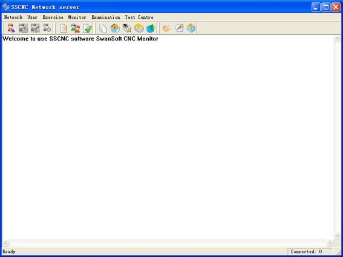
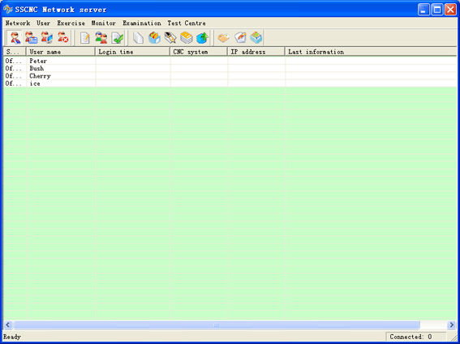
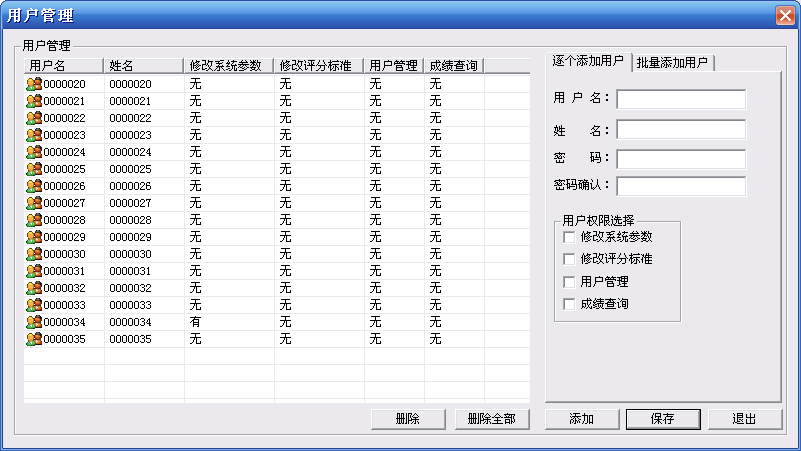

| 添加学生机 |
1.启动SSCNCSRV.exe,进入SERVER主界面，如下图：

2.单击工具栏中的“用户状态”图标，将会显示所有用户的状态，如下图：

4.在用户状态列表中选择一个用户,然后点击工具栏上的"设置教师机"图标将其设为教师机
5.单击"用户管理"图标,弹出"用户管理"对话框,如下图:
在这个对话框中添加用户名和姓名，以及该用户的权限。添加用户可以逐个添加也可以批量添加
a.逐个添加时,输入用户名，姓名，密码和密码确认，还可以为每个用户设置必要的权限，然后点击保存。
b.批量添加时，输入起始编号和用户数，还可以为每个用户设置必要的权限，然后点击保存。
